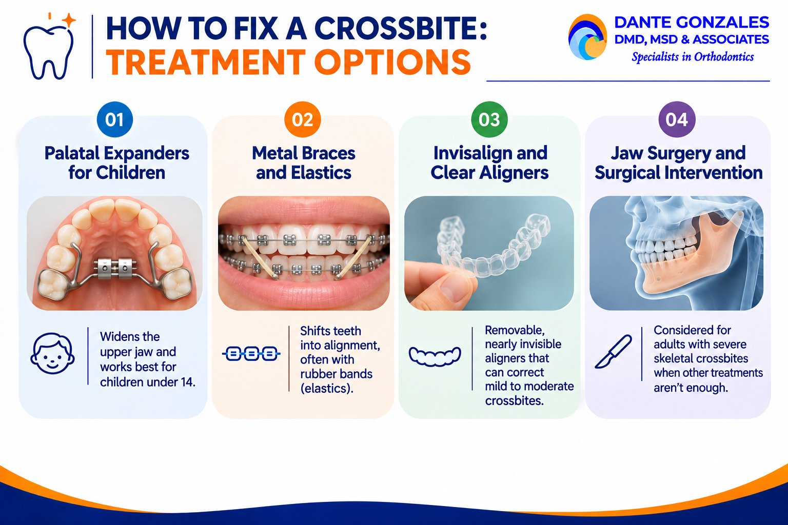

A crossbite means some of your upper teeth sit inside your lower teeth when you bite down. It can affect one tooth or several, and it can show up on one or both sides of the mouth.
This guide explains how to fix a crossbite, what causes it, and which treatment options work best at each age. You will also find answers to the most common questions patients ask.
What Is a Crossbite?
A crossbite is a misaligned bite in which the upper and lower teeth do not fit together normally. Crossbites can affect front teeth or back teeth. Studies suggest they affect roughly 4% to 23% of the population.
Anterior Crossbite
Anterior crossbites occur when upper teeth sit behind lower teeth. This usually involves the upper front teeth and the lower front teeth.
An anterior crossbite affects how your front teeth meet and can wear down enamel over time. A single tooth can be involved, which is often called a single tooth crossbite.
Posterior Crossbite
Posterior crossbites involve upper back teeth biting inside lower teeth. This is also called a buccal crossbite when the upper molars close inside the lower molars.
A posterior crossbite often comes from a narrow upper jaw. It may affect one or both sides, and it can cause the lower jaw to shift when you close your mouth.
Dental Crossbite vs. Skeletal Crossbite
A dental crossbite comes from tooth positioning. A skeletal crossbite comes from differences in jaw size or jaw structure.
Knowing which type you have shapes your treatment plan. An orthodontic evaluation, often with digital scans or X-rays, makes the difference clear.
What Causes a Crossbite?
Crossbites can be caused by jaw-size differences or tooth positioning. Often, more than one factor is involved.
Genetics and Jaw Growth
Genetics can influence jaw shape and tooth development. If a parent has a narrow upper jaw or a crossbite, a child may develop one too.
Uneven jaw growth between the upper and lower jaw can also contribute. This is why monitoring jaw development matters in childhood.
Thumb Sucking, Mouth Breathing, and Baby Teeth
Prolonged thumb-sucking can lead to crossbite development. Mouth breathing can also narrow the upper palate over time.
Baby teeth that fall out late or early can change how permanent teeth erupt. Teeth may come in blocked, crowded, or out of position.
Crossbite Symptoms: Signs You May Need Treatment
Some crossbites are easy to see, while others show up as discomfort. Knowing the crossbite symptoms helps you decide when to get checked.
Jaw Pain, Jaw Discomfort, and TMJ Disorders
Your jaw may shift to one side so your teeth can meet. That shifting strains the temporomandibular joint, which can cause jaw pain, clicking, or headaches.
TMJ disorders can develop from untreated crossbites. If your jaw feels sore when you wake up, mention it at your visit.
Uneven Tooth Wear and Chipped Teeth
Untreated crossbites can cause uneven tooth wear. Certain teeth take more force than they should, which leads to enamel wear and sometimes teeth grinding.
Chipped teeth can result from crossbite collisions when your teeth meet at the wrong angle. Gum recession can also occur around teeth under extra pressure.
Facial Asymmetry
Facial asymmetry may worsen with untreated crossbites. A shifting jaw can change how the face develops, especially in growing children.
Can a Crossbite Be Corrected?
Yes, a crossbite can be corrected at nearly any age. Crossbite treatment depends on the patient’s age and the severity of the misalignment.
Children often respond to simple appliances that guide jaw growth. Adults usually need braces or aligners, and severe skeletal cases may need surgery.
How to Fix a Crossbite: Treatment Options
There is no single answer for every patient. Here are the main crossbite treatment options your orthodontist may discuss:

Palatal Expanders for Children
Palate expanders are effective for correcting posterior crossbites in children. They are effective for children under 14, while the upper jaw is still growing.
A palatal expander applies mild pressure to widen the upper jaw. Some expanders are fixed in place, and others are removable expanders, depending on the case.
Metal Braces and Elastics
Braces effectively correct crossbites at any age. They use archwire tension to shift teeth into alignment, often with rubber bands.
Orthodontic elastics improve how the upper and lower teeth fit together during treatment. Braces can also achieve skeletal realignment when paired with other appliances.
Invisalign and Clear Aligners
Invisalign can treat mild to moderate crossbites effectively. Clear aligners are removable, nearly invisible, and planned with digital scans.
They work best for dental crossbites involving a few teeth. Complex crossbites may need braces, elastics, or an expander first.
Jaw Surgery and Surgical Intervention
Surgical-assisted approaches may be necessary for adults with severe skeletal crossbites. Once the jaws stop growing, an expander alone often cannot widen the upper jaw.
Jaw surgery is a last resort, not a first step. Early intervention can reduce the need for surgery later.
Can I Naturally Fix My Crossbite?
Not in most cases. Exercises, mouth habits, and home devices cannot move teeth or reshape the jaw in a reliable way.
You can support treatment by stopping habits like thumb-sucking and addressing mouth breathing. Real correction still requires an orthodontic appliance guided by a professional.
Does a Crossbite Get Worse With Age?
Yes, crossbites can worsen if not treated early. The jaws grow, teeth shift, and wear builds up year after year.
Risks of Untreated Crossbites
Untreated crossbites can lead to uneven tooth wear, gum recession, and tooth decay in hard-to-clean areas. They can also contribute to TMJ problems and facial asymmetry.
Crowded teeth and a misaligned bite also make brushing harder. That affects your overall oral health, and later repairs may require dental restorations.
Early Treatment and the Age 7 Evaluation
Children should be evaluated for crossbites by age 7. Early treatment of crossbites is generally more effective than late intervention.
Early treatment can prevent severe crossbite complications. It can also simplify the treatment plan and shorten the time spent in braces.
How Long Does Crossbite Treatment Take?
Braces treatment typically takes 12 to 24 months for crossbites. Expanders often work faster in children, sometimes within several months, followed by a retention period.
Your timeline depends on severity, age, and how closely you follow instructions. Wearing elastics and aligners as directed keeps treatment on schedule.
Is It Worth Fixing a Crossbite?
For most patients, yes. Correcting a crossbite protects your teeth from uneven wear, relieves jaw strain, and improves how your bite works.
It can also improve your smile and your confidence. Fixing the problem early is usually simpler and less costly than repairing damage later.
How to Fix a Crossbite: Your Next Step
If you notice jaw pain, uneven wear, or upper teeth that bite inside your lower teeth, schedule an orthodontic evaluation. A professional assessment shows which crossbite you have and which fix suits you best.
Contact Dr. Dante Gonzales to explore treatment options and build a personalized plan for a healthier bite.
Frequently Asked Questions
1. What is the difference between an anterior and posterior crossbite?
An anterior crossbite occurs when one or more upper front teeth sit behind the lower front teeth when biting down. A posterior crossbite occurs when the upper back teeth (premolars or molars) bite inside the lower back teeth, commonly caused by a narrow upper jaw arch.
2. Can Invisalign fix a crossbite?
Yes, Invisalign and clear aligners can successfully treat mild to moderate dental crossbites where tooth positioning is the primary cause. Complex or severe skeletal crossbites may require preliminary palatal expansion, braces, or combined appliances before finishing with aligners.
3. What is the best age to treat a crossbite?
The American Association of Orthodontists recommends evaluating children by age 7. At this age, the midpalatal suture is still open and receptive to palatal expansion, allowing orthodontists to guide jaw growth non-surgically and prevent facial asymmetry.
4. Does an untreated crossbite get worse over time?
Yes, untreated crossbites worsen as abnormal chewing forces cause uneven tooth wear, chipped enamel, and gum recession. Additionally, chronic jaw compensation can cause temporomandibular joint (TMJ) strain, clicking, headaches, and progressive facial asymmetry in growing individuals.
5. Can adults fix a crossbite without surgery?
Many adult crossbites can be corrected without surgery using braces, orthodontic elastics, or Invisalign if the misalignment is dental or moderate. However, severe skeletal crossbites in fully mature adult jaws may require surgically assisted rapid palatal expansion (SARPE) or orthognathic surgery.
Ready to start your smile journey?
Book a complimentary consultation with Dr. Dante Gonzales in Dublin or Tracy, CA. We will review your case and map out a clear, personalised treatment plan.
Request ConsultationQuestions about your orthodontic care? Meet Dr. Dante A. Gonzales, DMD, MSD and our orthodontists, or contact our Dublin or Tracy team for an individual assessment.
This article is for general education and is not a substitute for a professional orthodontic evaluation. Treatment recommendations and outcomes vary from person to person.